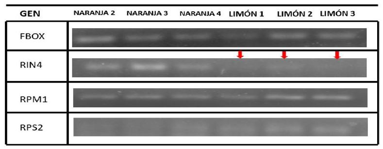
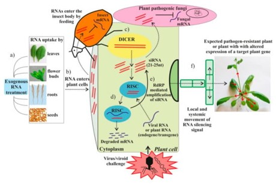
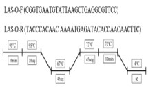
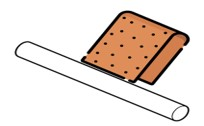
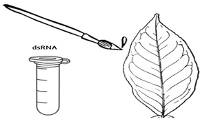
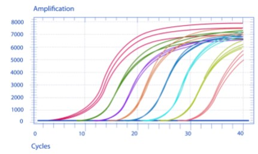
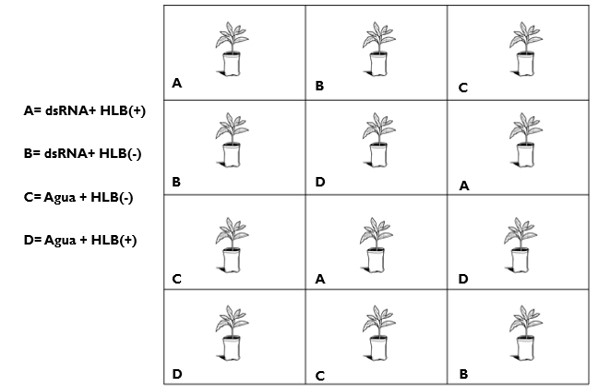

Introducción
La naranja es uno de los cítricos con mayor importancia económica en México, es afectada por el HLB que genera pérdidas millonarias. La variabilidad en la tolerancia ante el HLB varía según la especie de cítrico y se debe a una diferencia en la expresión de genes específicos. Estudios recientes muestran que la tolerancia al HLB podría estar asociado negativamente a la expresión del gen RIN4 (proteína encargada de activar la inmunidad vegetal), pues este gen se expresa más en especies susceptibles al HLB como la naranja, pero se reprime en especies tolerantes como el limón persa. Actualmente se cuenta con diferentes mecanismos para el silenciamiento especifico de genes mediante el uso de dsRNA (dsRNA, en inglés), para inducir el silenciamiento génico mediante ARNi (RNAi, en inglés). El objetivo de esta investigación es analizar el efecto de la aplicación exógena de un dsRNA específico para el gen RIN4 en la expresión del gen, en plantas de C. sinensis enfermas con HLB.
justificacion del proyecto
La producción de cítricos se ve afectada por el daño de plagas y enfermedades, que se traduce en pérdidas económicas. En la actualidad la enfermedad más devastadora para los cítricos a nivel mundial es el Huanglongbing (HLB); se estima que ha causado la muerte de árboles, principalmente en Asia, Sudáfrica y Brasil (González et al. 2018).
Esta enfermedad pone en peligro la estabilidad de los sistemas de producción citrícolas al generar una disminución de la productividad, calidad y la pérdida progresiva los árboles, lo que se traduce como una pérdida económica parea el productor.
¿Cuánto afectará la aplicación exógena de dsRNA la expresión del complejo RPM1-RIN4-RPS2 en plantas de C. sinensis enfermas con HLB?
La aplicación exógena de dsRNA afectará la expresión de los genes del complejo RPM1-RIN4-RPS2 en plantas de C. sinensis infectadas con Candidatus liberibacter asiaticus.
Evaluar la expresión de los genes del complejo RPM1-RIN4-RPS2 en plantas de C. sinensis con HLB posterior al tratamiento con dsRNA exógeno.
Diseñar dsRNA para el silenciamiento del gen RIN4 en C. sinensis.
Evaluar la expresión de los genes del complejo RPM1-RIN4-RPS2 posterior a la aplicación exógena de dsRNA en plantas de C. sinensis con HLB.
Evaluar la expresión de síntomas en plantas de C. sinensis tratadas con dsRNA exógeno.
Antecedentes
Impacto del HLB en la citriculcura
El Huanglongbing (HLB) se presenta principalmente en cítricos y afecta los tejidos del floema, causando problemas para la traslocación de asimilados en las plantas susceptibles(Folimonova 2020). Además, causa desequilibrios metabólicos en el huésped por agotamiento de nutrientes e interferencia del transporte(Zhaxi et al. 2020). En la actualidad es posible regular negativamente la expresión de genes particulares para el control de la resistencia a patógenos, la tolerancia al estrés abiótico, los procesos de crecimiento y otras propiedades de las plantas mediante la inducción de ARN de interferencia (ARNi)(Guo 2022).
Se ha demostrado que los dsRNA confieren resistencia a enfermedades mediante la pulverización foliar, denominado silenciamiento genético inducido por pulverización o por spray (SIGS). Un estudio realizado en genes del complejo RPM1-RIN4-RPS2 mostró que la expresión del gen RIN4 en naranja enferma con HLB es mayor respecto a limón persa con HLB, lo cual tiene una relación que suprime al gen RPS2 de manera descontrolada, el cual está encargado de la activación mecanismos de respuesta a enfermedades. Por ende, se busca reducir la expresión del gen RIN4 y sentar las bases para un tratamiento foliar con base en dsRNA en cítricos susceptibles al HLB.
El uso de esta tecnologia solo se ha probado para el sielenciamento de genes exogenos en agentes patogenos.
Complejo RPM1-RIN4-RPS2
Dadas las funciones reguladoras negativas de RIN4 en los procesos relacionados con la defensa en muchas plantas, autores como (Cheng et al. 2022) señalan que la regulación positiva del gen RIN4 puede modificar en las interacciones cítrico-bacteria, y su expresión puede estar relacionada con la alta susceptibilidad de los cítricos al HLB. Una investigación realizada por Mendoza-Pérez (2023), sobre la interacción de RIN4 dentro del complejo RPM1-RIN4-RPS2 en dos especias contrastantes al HLB (limón y naranja), se mostró que la expresión del gen RIN4 en limón persa es menor, en comparación con la expresión de RIN4 de naranja, como se observar en la figura 1. A su vez, podemos apreciar que la expresión del gen RPS2 en limón es considerablemente mayor que en naranja. Gracias a la relación que existe entre RIN4 y RPS2, el gen RIN4 de naranja está afectando la expresión de RPS2, a diferencia de lo que está ocurriendo en limón.
Encargade activar los mecanismos de interacccion planta patogeno ETI y PTI
Permite la deteccion de agentes de AVR y AVG
Encargado de activar las respuestas hipersencibles de las plantas

Genes como RIN4 son proteínas localizadas en la membrana de células, funge como regulador de la inmunidad vegetal(Alam et al. 2021). La sobreexpresión de RIN4 inhibe la activación del gen RPS2, por lo tanto, se requiere la desaparición de RIN4 para la activación completa de RPS2 (Belkhadir, Subramaniam, and Dangl 2004). Dado la función del gen RIN4 sobre la activación de mecanismos de respuesta a patógenos, este estudio propone el uso dsRNA vía foliar para el silenciamiento génico de RIN4.
Mecanismos de silenciamiento genico
La interferencia de ARN (RNAi) es un mecanismo de silenciamiento genético utilizado por plantas y otros eucariotas para regular la expresión de genes endógenos, silenciar transposones (y otras regiones heterocromáticas) y defenderse de infecciones virales (Baulcombe 2004). Se logra mediante la acción de un ARN pequeño (sRNA) con complementariedad con la secuencia del gen diana unido a una proteína argonauta (AGO) para formar un complejo de silenciamiento inducido por ARN (RISC). El silenciamiento puede ocurrir a nivel transcripcional o postranscripcional, dependiendo de las formas específicas de estos componentes. Estos siRNA secundarios pueden amplificar el silenciamiento del objetivo primario o actuar en trans para silenciar a miembros de una familia de genes, como el ejemplo bien estudiado de los ARNm de resistencia a enfermedades NBS-LRR (Axtell and Staskawicz 2003).

Resultados del silenciamiento de genes mediante dsRNA de genes CHLH en A. thaliana
En este trabajo de evaluo el efecto de la aplicación de dsRNA para el gen CHLH relacionado con la producción de clorofila. Las manchas amarillas en las ojas indican que existió silenciamiento de dicho gen tras la aplicacion de dsRNA via tópica (b), tal como se puede aprecial en la siguiente imagen:

materiales y metodos
Se realizará el alineamiento de las secuencias del gen RIN4 usando como base RIN4 de A. thaliana. Una vez identificadas las secuencias RIN4 de C. sinensis se identificó la proteina correspondiente.
El dsRNA se diseñará específicamente para detener la transcripción del gen RIN4 en C. sinensis, y se diseñará en (https://eurofinsgenomics.eu/en/dna-rna-oligonucleotides/oligo-tools/sirna-design-tool/) para realizar qPCR.
Para la síntesis del ARN de doble cadena se sintetizará mediante la empresa T4-Oligo (https://t4oligo.com).
Para la obtención de la planta enferma de HLB se realizarán injertos sobre plantas de C. sinensis. Las yemas se obtendran de plantas infectadas con HLB, a las cuales se les realizarán pruebas para la detección de la enfermedad (PCR punto final). Las condiciones se aprecian en lña siguiente imagen:

Las plantas se pueden almacenar en un vivero para evitar los riesgos de contagio de otras enfermedades o evitar el ataque de insectos como minador o araña roja.
Se utilizará una lija p600 enrollada en un cilindro para facilitar la abrasión de las hojas. Se realizará la abrasión previa a la aplicación de dsRNA en el has en las hojas seleccionadas con una gota de agua destilada estéril.
La abración de la hoja se debe hacer en la parte del haz y con extrema cautela para evitar romperla.

La aplicación de dsRNA se realizará mediante brochas o micropipeta a una concentracion de 200 ppm con un penetrante y técnicas para disminuir factores de riesgo.
La aplicacion se realizara posterior a la abrasión.

Se realizarán pruebas de expresión de RIN4 en diferentes periodos postaplicación, con PCR tiempo real (2 horas, 24 horas, 48 horas, 72 horas, una semana y dos semanas).
A su vez se evaluarán la expresión de genes RPM1 y RPS2 en diferentes periodos de tiempo post aplicación, con PCR tiempo real (2 horas, 24 horas, 48 horas, 72 horas, una semana y dos semanas).

Diseño experimental
Se utilizará un diseño completamente al azar, con cuatro tratamientos y tres repeticiones.

Análisis de datos
Para el análisis de datos se utilizará una prueba ANOVA utilizando el software estadístico R 2.12.2.
Avances
Se han obtenido algunas de las secuencias de proteinas correspondientes a C. sinensis, A. Thaliana y la Secuencia ARNm de C. sinensis. dichos resultados se presentan a continuación.
MAQRSHVPKFGNWENEDNVPYTMYFDKARKGRTGGTMINPNDPQENPDLL SDYEAQAPAPPSKIKAEPEKPLGQEAVRTTYERWRNKEGSDLRQSRDSPA RHDDMSCRAATESAHQRGGRVASSGETYKKPVRNSIGSDNSFERSPMHNQ ARNPRRGSLDSSSPSWEGKSVYTNSHGTPGRSRMRPNPRVDESPDKGAAV PKFGDWDENNPSSADGYTHIFNQVREERNSAGRAGMQSPSTQRNYHRPTN NDGVKSCCFPWGKK
MARSNVPKFGNWEAEENVPYTAYFDKARKTRAPGSKIMNPNDPEYNSDSQSQAPPHPPSSRTK PEQVDTVRRSREHMRSREESELKQFGDAGGSSNEAANKRQGRASQNNSYDNKSPLHKNSYDGT GKSRPKPTNLRADESPEKVTVVPKFGDWDENNPSSADGYTHIFNKVREERSSGANVSGSSRTP THQSSRNPNNTSSCCCFGFGGK
ATGGCACAACGTTCACATGTACCGAAGTTTGGAAACTGGGAAAATGAAGA TAATGTTCCTTACACAATGTATTTTGACAAGGCCAGGAAGGGTCGGACTG GGGGGACGATGATTAATCCAAATGACCCGCAGGAGAACCCGGACTTATTG TCTGATTATGAAGCTCAAGCTCCAGCTCCTCCTTCCAAGATCAAAGCTGA ACCAGAGAAGCCTCTGGGACAAGAAGCAGTTAGAACAACTTATGAAAGAT GGAGGAACAAAGAGGGTAGTGATCTCAGGCAGTCCAGAGACTCACCAGCA CGTCATGATGACATGAGCTGCAGAGCTGCCACTGAGTCTGCTCATCAACG AGGAGGTCGTGTAGCAAGTTCTGGTGAAACATACAAGAAGCCTGTAAGAA ACAGTATAGGTTCAGACAACAGCTTTGAACGCTCCCCTATGCATAATCAG GCTAGGAACCCCAGAAGAGGTAGTCTGGATTCATCCTCTCCTTCATGGGA AGGAAAGAGTGTGTATACAAATAGCCATGGTACTCCTGGAAGATCTCGAA TGAGGCCAAATCCAAGAGTCGATGAAAGTCCTGATAAAGGGGCTGCAGTT CCTAAATTTGGGGATTGGGATGAGAATAACCCTTCATCAGCTGATGGTTA CACTCACATTTTTAACCAAGTGCGAGAGGAGAGAAACAGTGCAGGAAGAG CAGGCATGCAAAGTCCTTCCACGCAGAGAAACTATCATAGGCCAACTAAT AATGACGGTGTCAAGAGTTGTTGCTTTCCTTGGGGCAAGAAATAA
Aun se analiza cual de las secuencias obtenidas es la más adecuada para este proyecto.